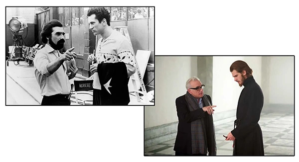
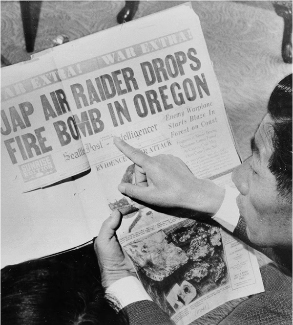

Martin Scorsese Still Has Stories to Tell
by
Stephanie Zacharek
september 12, 2023 7:00 am edt
Martin Scorsese is wearing a blue shirt. It's a nothing-special medium-dark blue, at least as it's backlit by the afternoon sun streaming through the window. But later, in the crisp-soft light of the screening room located in his office, it becomes a blue of a different color, a hue you see most commonly in wildflowers, and in the movies. Almost iridescent, it shimmers toward purple; in an unreal sky, it would be the shifting point between dusk and outer space. It's proof of the illusory nature of color, but as metaphors go, it's a humble one, a trick of cloth and dye and light. Let's call it—after the ace cinematographer behind the Technicolor marvels of Michael Powell and Emeric Pressburger, among Scorsese's favorites—Jack Cardiff Blue.
Color is important to nearly all filmmakers, but Scorsese may be more attuned than most to both its language and its evanescence. In 1990, having been alarmed for decades by the deterioration of so many aging film prints, he established the Film Foundation, a nonprofit dedicated to preserving film history. In his screening room, we watch a clip outlining the restoration of Powell and Pressburger's The Red Shoes, which Scorsese saw with his father in the theater when he was 8. It's transportive to watch Moira Shearer leaping and pirouetting, her image freed from the murky mold damage that had been digitally removed from the negative. The before-and-after comparison illustrates why it's crucial for the entities that own these films to ensure they're around for future generations. “This means a lot to a lot of people, spiritually, culturally,” he says. “Like reading a book.”

Photograph by Mark Mahaney for Time
Scorsese's encyclopedic knowledge of film has made him the patron saint of film bros, and though it's a title he most certainly never asked for, he's happy to talk about movies for as long as you like. But the stories he tells me during our three-hour interview—about falling in love with westerns as an asthmatic kid, or about his Aunt Mary taking him to a double bill of Bambi and Jacques Tourneur's great obsessive noir Out of the Past at age 6—are about so much more than movies. Even people who love movies often talk about them in a way that disconnects them from life; it's easier to jaw on about camera angles than it is to explain how a film speaks to our soul. Scorsese can articulate all of it.
There are still many of us who see the past, present, and future of film as a continuous, regenerative strand, who find pleasure in the filmmaking of the past even as we harbor hopes for its future. If you think that way, you might imagine everyone does. But the reality is more dismal. Content is king, and entertainment billionaires want to keep shoveling it our way, at the lowest possible cost to themselves. In their eyes, we're no longer moviegoers—a word that, in 2023, has a painfully romantic ring to it—but consumers of content, and the consumers have spoken: They want art on their own terms. Their fandom must be served. Both moguls and audiences are leaning into their worst impulses. Scorsese hesitates to use the word art when he's talking about movies; he knows how it sounds, and he knows as well as anyone who's seen a double bill of Out of the Past and Bambi that art and entertainment can blur and fuse, wonderfully. But the very idea of movie artistry is in crisis, and it doesn't look as if it's getting better anytime soon. Scorsese is worried about that, and if you care about movies, you should be worried too.
“It should be one cinematic culture, you know? But right now everything is being fragmented and broken up in a way.” We've always had film genres, he says, but when he was growing up, people who loved movies would just go. “Not everybody liked musicals. Not everybody liked westerns. Not everybody liked gangster films or noirs. But at the time, we just went to the movies, and that's what was playing.” By itself, knowing a lot about film means nothing. That bank of knowledge needs to be entwined with curiosity about the world; seemingly definitive answers lead only to more questions.
Director Martin Scorsese in New York City on Aug. 8, 2023. Photograph by Mark Mahaney
And that right there may be the key to being Scorsese. At 80, he seems eager to fit everything together: not just the movies he's seen or made, but the books he's read over a lifetime, the seemingly random encounters he's had at turning points in his life, the evolving, unfinished project of his own spirituality, shaped largely, but not only, by Catholicism. Intertwined with all of this exploration and self–examination are the movies he still hopes to make, and the finished one that, at the time of our conversation, is about to be released in theaters: an emotionally intense adaptation of David Grann's 2017 Killers of the Flower Moon, about the sinister, systematic murder of members of the Osage Nation in early 1920s Oklahoma, by white locals who sought to gobble up oil-rich Osage land—a story Scorsese calls “a sober look at who we are as a culture.”
Projects like Killers are part of why he's spent his career pushing for something that can only be called a radical truth—certainly in the films he makes, but even more so in his everyday reckoning with the world. Plenty of young filmmakers want to be the next Scorsese; few have any sense of what the act of becoming entails.
Scorsese found his way to Killers of the Flower Moon shortly after filming his 2016 picture Silence, about Portuguese Jesuit missionaries facing a crisis of faith in 17th century Japan. Something about the juxtaposition of “flower moon” and “killers” in the title struck him: “It was an impression, like a haiku, almost.” He slipped right into Grann's book, and knew he wanted to film it.
Killers of the Flower Moon, which arrives exclusively in theaters on Oct. 20 before streaming on Apple TV+, is a grave, urgent picture, less overtly violent than the films—Taxi Driver, Goodfellas, Raging Bull—that helped build Scorsese's reputation, yet perhaps more attuned than any of his movies to the insidious, selfish nature of human beings. It's about a different kind of violence, born of greed, racism, and a sense of entitlement. But it's also about a marriage, between the characters played by Leonardo DiCaprio and the extraordinary Lily Gladstone. DiCaprio is the sometimes sweet, sometimes wily World War I veteran Ernest Burkhart, in thrall to his seemingly magnanimous uncle, big-shot cattleman William K. Hale (Robert De Niro). Gladstone plays the Osage woman he marries and builds a life with, the former Mollie Kyle. The oil rights on her land have made her rich, but she watches in anguish as members of her family begin to mysteriously die off; her own health deteriorates as well, at an alarming rate.
Scorsese with Lily Gladstone and Leonardo DiCaprio on the Killers of the Flower Moon set. Courtesy of Apple
Grann's book focuses largely on the birth of the Bureau of Investigation—now known as the FBI—and specifically on one of its most upstanding agents, Tom White (played by Jesse Plemons). Originally, DiCaprio was supposed to play White. But something about that framework bothered both him and Scorsese. “After a certain point, I realized I was making a movie about all the white guys,” Scorsese says. “Meaning I was taking the approach from the outside in, which concerned me.” Eventually, he and DiCaprio realized that the heart of the movie wasn't the birth of the FBI, but the love story between Ernest and Mollie. That became the film's core.
That shift in perspective also opened space for one of the film's greatest performances, from Gladstone. In her, Scorsese says, there's “a fierceness and serenity at the same time. And it's encased in this intelligence—the eyes say it all.” Gladstone also spurred some of the movie's finest improvised dialogue. Early in Ernest and Mollie's courtship, she calls him a coyote, but in Osage. DiCaprio, in character and, as always, quick on his feet, counters with an unscripted line: “You must mean handsome devil.” Gladstone laughs, just as Mollie might have in real life. The moment made it into the movie, because you can't buy that kind of spontaneity.
Not only is this story drawn from fairly recent history; it's also part of a community's painful past, filmed largely in Pawhuska, Okla., not far from Fairfax, where the events occurred—places where the descendants of the story still live, carrying memories of their forebears. Chad Renfro, an interior designer who grew up in the area with Osage grandparents, became involved in the production at the start, eventually becoming a consulting producer. The story told in Killers of the Flower Moon, horrific enough by itself, is part of a much larger pattern. “Marty made a story of trust and betrayal,” Renfro says. This community had suffered so many betrayals, he explains, “over hundreds of years of dealing with governmental agencies, and people who came in and took advantage of us.” It was understandable that Osage from the area—from Pawhuska, Gray Horse, and Hominy—would be wary of a white filmmaker coming in to tell their story, particularly one whose films are so often charged with violence.
Scorsese and his team worked closely with Osage Principal Chief Geoffrey Standing Bear and his office, Renfro says, and hundreds of Osage were involved in making the film. “The first day of filming, we had an elder, Archie Mason, come and say a prayer,” Renfro says. That amazed and thrilled some of the cast and crew; they'd never before started a film with a prayer.
Spending time with Scorsese—listening to his ideas unspool in stanzas that are somehow both operatic and streetwise-colloquial, shot through with spirited digressions and invisible exclamation points—is great fun, but you've got to pay attention. He talks fast and covers a lot of ground. Even his office decor speaks of a sensibility that can't be reduced to bite-size quotes: dozens of family photographs share space with vintage movie posters—there's one for Vincente Minnelli's juicy 1952 movie-biz masterpiece The Bad and the Beautiful hanging right behind his desk. There are books everywhere, but also an enviable collection of Classics Illustrated, comic-book versions of great works (The Iliad, Moby-Dick) that fired up lots of little brains from the '40s through the '60s.
It's a place where the past merges seamlessly with the present, and where ideas seem to hang in the air, which perhaps explains why Scorsese has so many of them. But it's a fallacy, albeit probably a common one, that he has always been able to make any movie he wants, whenever he wants, with bounteous funding. Silence was on hold for years, thanks to what Scorsese calls a Gordian knot of legal problems and rights issues. He was supposed to begin filming The Last Temptation of Christ in 1983, but the project, controversial from the beginning, fell apart. Though he was able to make the picture four years later, he had to make do with a small fraction of its original budget.

Directing Robert De Niro in Raging Bull (1980), and Andrew Garfield in Silence (2016). Everett Collection (2)
That's a long way of saying he knows all about the connection between filmmaking artistry and the more prosaic art of dealmaking. He also understands that commercial pressures are more brutal than ever. “Young people expressing themselves with moving images, they're going to find a way to be seen,” he says. “But they have to fight, they have to really, really fight and not be co-opted.” He worries that the blockbuster ethos, as it's currently playing out, may mean the end of personal filmmaking. He spins this observation into a rueful joke about how he and his cohorts Francis Ford Coppola and Michael Cimino were viewed after they'd made complex, ambitious films that tried the patience of studio heads. “Ultimately, they say, ‘Well, who wants personal filmmaking? Look what happened in the '70s. By the end of it, you all went mad! And you went over budget and schedule, and you made these three movies, Apocalypse Now, Raging Bull, and Heaven's Gate!'” The point is that a filmmaker's vision—the very thing that makes him distinctive—is what's held against him when the money doesn't roll in.
Scorsese seems driven to open the world to people the way others have opened it to him. “You know, I was lucky because my parents were really good with me and my brother. And we were part of a very big family.” There wasn't much money, and his New York City neighborhood was sometimes rough, populated by the kinds of street toughs who would later find a place in his movies. But he knew nothing but love at home. “The real love that I found, acted out as best as possible under the circumstances, was in that apartment on Elizabeth Street.”
He speaks, as he often has in interviews, of Father Francis Principe, the progressive young priest assigned to Scorsese's neighborhood when he was a kid, an altar boy who was simultaneously attracted to Catholicism and unsure how it connected with real life. Father Principe would take Scorsese and his fellow altar boys to the movies, and they'd discuss what they'd just seen. He introduced the kids to writers—Graham Greene, Dwight Macdonald—they wouldn't have otherwise read. There are reasons, maybe, why so much of Scorsese's work—including Killers of the Flower Moon—seems to seek a role for the spiritual self in a hostile, almost inhuman world. “How does human decency, or how does love even come into the picture?” he wonders aloud.
He talks about the time, in 2010, he took a rare vacation in Egypt and visited St. Catherine's Monastery, in Sinai. It's located right near the spot where Moses received the tablets; the burning bush is nearby. “It's no longer burning, but it's there,” Scorsese says.
As he and his wife Helen and daughter Francesca wound through these dark, 6th century corridors, a maze of white walls with small windows dotted with paintings and cases of artifacts, they turned a corner and a vision—or perhaps it was a challenge—lit up in their path. “All three of us were, like, stunned,” he says. The specter before them wasn't a ghost at all, but one of the oldest Byzantine icons, an almost life-size encaustic painted on a rounded surface, lifelike and mystical at once, known as the Christ Pantocrator. Symmetry is pleasing in art, which makes the asymmetry of the Christ Pantocrator at least slightly unnerving: one eye is larger than the other, and Scorsese found himself in a stare-down. “The look, you know, the look was a loving sort of confrontational look. Like, who are you? What are you doing with your life? Who are you? What next? All these questions. Like, what, what, what do I do? It shook me, in a way.”
Scorsese's new movie, Killers of the Flower Moon, continues his quest for radical truth. Photograph by Mark Mahaney for time
Mention Scorsese's name, and everyone wants to talk about Taxi Driver, Goodfellas, Raging Bull—or maybe, even, about the delightful cameos he makes in Francesca's TikTok videos. (In one of them, she asks him to identify common “feminine items,” among them an eyelash curler and a Beautyblender.) A surer way to clear out a dinner party is to bring up Silence, or Kundun, Scorsese's ardent 1997 film about the life of the Dalai Lama, or, heaven forbid, The Last Temptation of Christ, which drew ire upon its release for its suggestion that Jesus wanted to sleep with Mary Magdalene. But those movies aren't just outliers in Scorsese's body of work. In their questioning spirit, they may be foundational for everything else, up to and including Killers of the Flower Moon, a picture that peers, deeply and uncomfortably, into the inhumanity of humans, knowing there's no valid way to ask the forgiveness of those who've been wronged.
Scorsese has lots of movie projects he wants to get to, among them an adaptation of Marilynne Robinson's Home. He would also like to make another movie about Jesus, as he alluded last May, after having met with Pope Francis. “I don't know what it's going to be, exactly. I don't know what you'd call it. It wouldn't be a straight narrative.” It would, he suggests, build on some of the ideas he explored in Silence. “But there would be staged scenes. And I'd be in it.”
It sounds, frankly, unfilmable—all the more reason to believe he'll pull it off. The Christ Pantocrator will somehow be a part of Scorsese's Jesus movie; he's not quite sure how he's going to get there, but he will. What is he doing with his life? He's spent a lifetime figuring that out, and he's nowhere close to being finished. The bush is still there; it's still burning.
Pearl Harbor was the only WWII attack on the U.S., right? Wrong.
U-boats stalked the coast. Balloon bombs were set off to start wildfires. These assaults on the U.S. mainland caused destruction and panic—when they weren't covered up.
The S.S. Pennsylvania Sun was torpedoed by a German u-boat in July 1942 off the coast of Key West, Florida. Despite a raging fire which sent columns of black oily smoke billowing into the sky, crew members were able to bring the flames under control, and the tanker was towed to port by a U.S. naval ship 1942.
Photograph via u.s. navy. office of public relations
by Neil Kagan and Stephen hyslop
Published september 21, 2023 • 9 min read
Most of the fighting during World War II took place overseas, destroying much of Europe and Pacific nations in the process. But there are little known instances of Japan and Nazi Germany attacking the American mainland. These incidents—including balloon bombs, lurking U-boats, and a mysterious object flying in Los Angeles's night sky—highlighted the vulnerability of the U.S. homeland and prompted increased defense measures. They also unleashed fear and suspicion throughout the American population, notably against Japanese Americans, resulting in the internment of thousands of innocent people. Here are some notable examples of enemy attack on U.S. soil while war raged abroad.
Japanese balloon bombs
Between November 1944 and April 1945, the Japanese launched about 9,000 high-altitude balloon bombs, known as “fire balloons,” that were carried across the Pacific Ocean in the atmospheric jet stream with the aim of starting forest fires in the western United States. The balloons were kept afloat using a mechanism that triggered a fuse when the balloon dropped in altitude, releasing a sandbag to lighten the load and rise back up; this was repeated until all that was left was the bomb. While there have been only 300 documented recoveries, some of these balloons reached as far inland as Wyoming and Montana.
One had tragic results. On May 5, 1945, a balloon bomb exploded near Bly, Oregon, killing six Americans on a church picnic, including a pregnant woman and five children—the only mainland casualties that resulted from enemy action during World War II. While the Japanese hoped to instill panic and divert resources from the war effort, the U.S. government kept the enemy's scheme under wraps from the public for fear of mass hysteria. Even the affected community was forced to remain silent after the disastrous event.

Left: The Japanese attempted to bomb the U.S. mainland by floating balloons, like one pictured here in California in 1946, via high-altitude air currents. The project was dubbed "Fugo" as was the first intercontinental weapons system.
Photograph by national museum of the us navy
Right: Twenty years after leading a bombing raid targeting Brookings, Oregon, Nobuo Fujita reads a 1942 headlines of his wartime bombing mission. Fujita visited Brookings as a guest of the junior chamber of commerce in an international goodwill gesture.
Photograph by associated press
The German U-boat threat
German U-boats—an abbreviation of Unterseeboot, the German word for “undersea boat”—prowled the Atlantic waters along the American and Canadian coastlines between January and June 1942, targeting U.S. and Allied shipping. In the first three months of 1942, they sank more than 100 ships—some within sight of land. In North Carolina alone, U-boats sank 78 merchant ships, killing 1,200 merchant marines.
The U.S. Navy was not prepared for this threat, and the situation became so desperate that unarmed civilian light aircraft patrolled offshore, though the pilots had no means of driving the U-boats from the U.S. coastline. Some crews later jury-rigged their planes with bombs, successfully sinking two U-boats.
The attacks finally declined after American merchant ships began sailing in transatlantic convoys, accompanied by sea and air escorts.

Two Coast Guard convoy patrols take to the skies.
Photograph via the national archives
A skulking Japanese submarine
On February 23, 1942, a Japanese submarine, the I-17, under the command of Commander Nishino Kozo surfaced off the coast of California and shelled the Ellwood oil field near Santa Barbara. It was one of California's largest oil fields, but unlike those in San Francisco and Los Angeles, it did not have a major military presence.
Contemporary newspaper reports describe the attack as beginning at 7:15 p.m., with a total of about 16 shells fired. Hilda Wheeler, who helped run the nearby Wheeler Inn, described the scene: “We saw the shells tearing up the ground as they landed between us and the ocean front. … We all thought at first it was target practice. And then we looked out back and saw the earth spurting up and we were scared to death.”
Amazingly, the only destruction was a damaged rig that needed a $500 repair job, and one man was wounded when he attempted to defuse an unexploded shell. U.S. planes chased the sub, but Nishino got away.
Nevertheless, the incident generated significant fears of invasion among Americans living on the West Coast. Newspapers blurted: “Submarine Shells Ellwood Oilfield” and “First Attack of War on Continental U.S.” Soon after, the U.S. government unjustly rounded up more than 120,000 Japanese Americans—the majority U.S. citizens—and placed them in internment camps, where they remained until 1945.
A mysterious flying object
The day after the Ellsworth oilfield was attacked, paranoia reigned, leading to one of the war's most bizarre home-front incidents. Naval intelligence told units on the California coast to prepare for a potential Japanese attack. At 2 a.m. on February 25, the military picked up an unidentified flying object approaching the Los Angeles area. Believing the Japanese might use aircraft or balloons to launch an attack on California, they sounded air raid sirens, and the city went into a state of high alert. Searchlights aimed at the object and more than 1,400 rounds of anti-aircraft ammunition were fired, resulting in a chaotic night-sky scene. During the chaos, several people died as a result of car accidents and heart attacks. But no enemy aircraft was shot down, and no wreckage or debris was recovered.
This event, referred to today as the Battle of Los Angeles, remains shrouded in mystery, with no definitive explanation for the mystifying object.
A bomb-equipped floatplane
On September 9, 1942, a Japanese submarine launched a small reconnaissance floatplane equipped with two 170-pound thermite incendiary bombs over the Oregon coast in the hope of starting massive forest fires and igniting large-scale panic. The pilot, Nobuo Fujita, released the bombs about 50 miles inland in the vicinity of Mount Emily, starting a smattering of small forest fires. Rainfall in the area made the forest damp and less prone to igniting. Bomb fragments identified as Japanese were collected and handed over to the U.S. Army.
President Roosevelt called for a news blackout in the hopes of avoiding mass panic, though the effort proved fruitless since so many people already knew about the attack. The military brought in fighter aircraft, and blackouts were implemented all along the West Coast.
Fujita conducted another incendiary attack after midnight on September 29, 1942, dropping more two bombs along the Oregon coast. He reported seeing flames, but no one on the ground reported anything.
Soliders survey the damage after the June 21, 1942 shelling of Fort Stevens in Oregon by the Japanese submarine I-25. In response to the April 1942 bombing of the Japanese archipelago, known as the "Doolittle Raid," Japanese sent their I-class long-range submarines to attack along the North American Pacific coast.
Photograph via the national archives